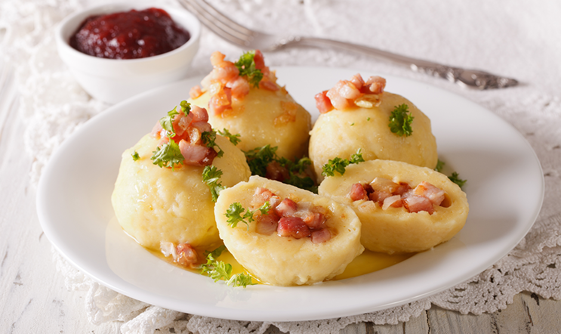
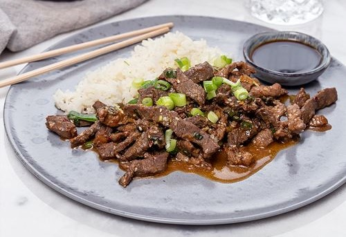
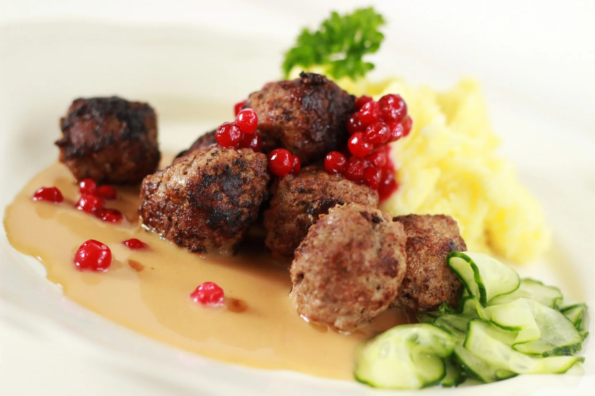
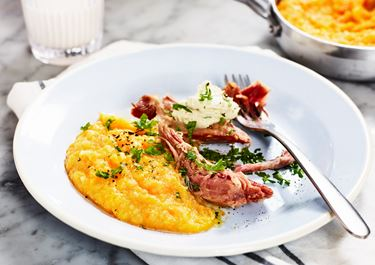

Tims Recept
Information
Kött
Veganskt
Desert
Recept med Kött

Mumsiga Kroppkakor
50 minuter - Kött

Yakinku
50 minuter - Kött

Köttbullar
50 minuter - Kött

Fläsklägg med Rotmos
50 minuter - Kött